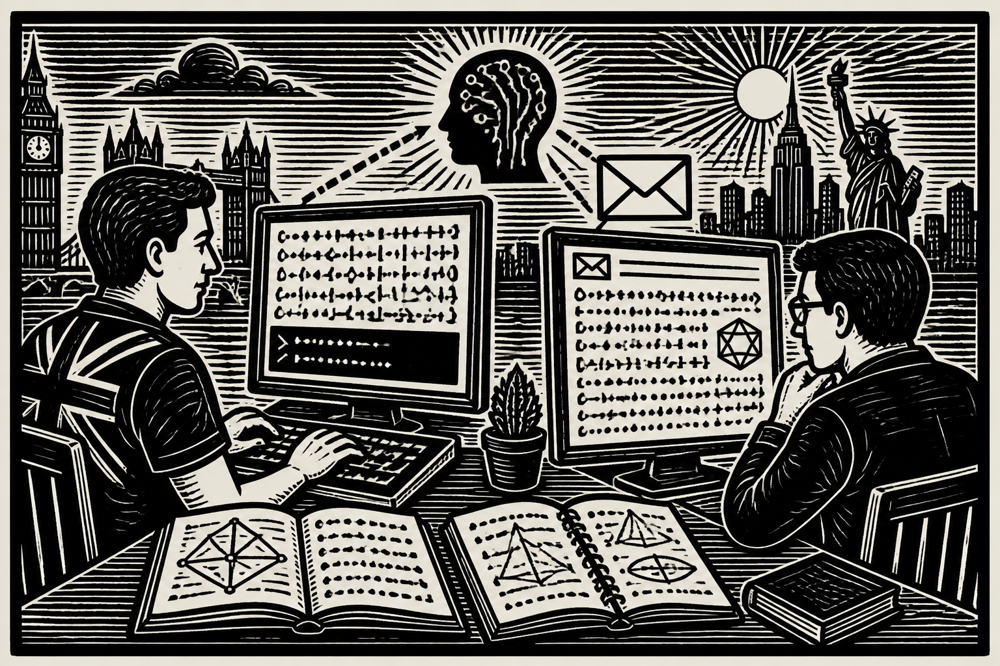

A semana em sextilha:
notícias de IA contadas em cordel
Sete sílabas por verso. Seis versos por estrofe.

Projeto Autoral de Criatividade Computacional (IF866), CIn/UFPE, 2026.2
Repete-se a forma.
Varia a notícia.
Gerar folhetos de cordel a partir das notícias de IA da semana do CriaComp News, mantendo constantes a forma (sextilhas de sete sílabas) e a estética de xilogravura, enquanto varia a notícia. Estrofes fora da métrica são descartadas.
gpt-6-luna escreve os versos (padrão)gpt-5.5 no primeiro folheto e nos testesgpt-image-2 nas primeiras xilogravurasgpt-image-1-mini nas xilogravuras de agoratool = image_generation(model="gpt-image-1-mini")
ai.stream(gpt_6_luna, [prompt], tools=[tool],
tool_choice=REQUIRED)
O modelo de texto é obrigado a chamar a ferramenta de imagem. A xilogravura volta junto com a resposta.
Usado em todo folhetocordel-generator-production.up.railway.appa coleção inteira, o descarte e o caderno de bordo
7